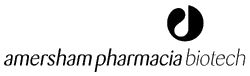

Московское представительство АМЕРШАМ ФАРМАЦИЯ БИОТЕХ (Amersham Pharmacia Biotec) подвело итоги конкурса научных работ в области молекулярной биологии для молодых ученых не старше 32 лет, работающих в научных учреждениях Российской Федерации.

Глубокоуважаемые господа!
Московское представительство АМЕРШАМ ФАРМАЦИЯ БИОТЕХ подвело итоги конкурса научных работ в области молекулярной биологии для молодых ученых не старше 32 лет, работающих в научных учреждениях Российской Федерации.
Всего на конкурс было подано 35 работ. Претенденты представляли 22 научных Института России: Москвы - 9, С-Петербурга - 4, Новосибирска - 2, Пущино - 2, Иркутска - 1, Оболенска - 1, Саратова - 1, Смоленска - 1, Уфы - 1.
Первая премия присуждена Колесниковой Ольге Александровне, аспирантке третьего года Московского государственного университета им. М.В. Ломоносова, за работу «Исследование механизмов импорта тРНК в митохондрии дрожжей и их возможное применение для лечения нейродегенеративных и мышечных заболеваний человека».
Вторая премия присуждена Зверевой Марии Эмильевне, младшему научному сотруднику Института физико-химической биологии им. А.Н. Белозерского, за работу «Изучение малых стабильных молекул РНК-компонентов аппарата трансляции».
Александрова Елена Сергеевна, научный сотрудник Института биоорганической химии им. М.М. Шемякина и Ю.А. Овчинникова РАН, и Козырь Арина Владимировна, научный сотрудник того же Института, разделили вторую премию, за работы «Структурно-функциональное исследование каталитического антиидиотипического антитела к ацетилхолинэстеразе эритроцитов человека» и «Исследование функциональных свойств аутоантител к ДНК» соответственно.
Третья премия присуждена Мерсияновой Ирине Викторовне, научному сотруднику Медико-генетического научного центра РАМН, за работу «Картирование и идентификация нового локуса аксональной формы наследственной мото-сенсорной нейропатии (болезни Шарко-Мари-Тута II типа)».
Третья премия присуждена Эйдельштейну Михаилу Владимировичу, старшему научному сотруднику НИИ антимикробной химиотерапии Смоленской государственной медицинской академии, за работу «Разработка молекулярно-генетических методов для исследования β-лактамаз TEM- и SHV-типа у клинических штаммов энтеробактерий».
Третья премия присуждена Захарову Владиславу Викторовичу, научному сотруднику Петербургского института ядерной физики РАН, за работу «Сигнальные белки нервных окончаний GAP-43 и BASP1: структурные и функциональные аспекты».
Кроме того, Амершам Фармация Биотех награждает ряд исследователей поощрительными призами - наборами и реактивами производства нашей компании. Список награжденных будет выслан через неделю.
Премии победителям будут вручены 12 марта 2002 года в московском представительстве Амершам Фармация Биотех по адресу: Москва, 117312, ул. Губкина, 14-71. Время будет сообщено дополнительно.